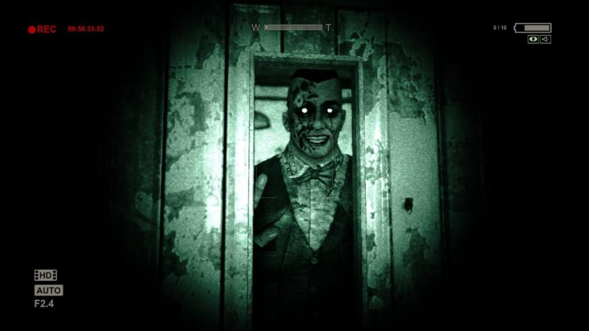

O maior easter egg de Outlast: "você nunca esteve sozinho"
O segredo mais impressionante de Outlast não é um item escondido ou
código secreto. É o fato de que o jogo inteiro foi construído para
fazer o jogador sentir que está sendo observado o tempo todo — e isso
realmente acontece.
A Red Barrels colocou dezenas de figuras escondidas, aparições rápidas
e personagens observando o jogador sem atacar. A maioria passa
despercebida porque aparecem:
- por menos de 1 segundo,
- em locais escuros,
- longe do centro da tela,
- ou apenas usando visão noturna.
Isso virou um dos maiores "mistérios" da comunidade porque muita gente zerou o jogo sem perceber nada.

Como encontrar?
Logo no início do jogo, quando o jornalista Miles Upshur entra no manicômio Mount Massive.
- Você estaciona o carro.
- Entra no hospício pela janela quebrada.
- Pega a câmera.
- Anda pelos corredores escuros.
- Chega numa área com janelas grandes e iluminação fraca.
Se você olhar para cima, em uma das janelas superiores, aparece uma silhueta humana parada encarando você.
Ela desaparece em segundos.